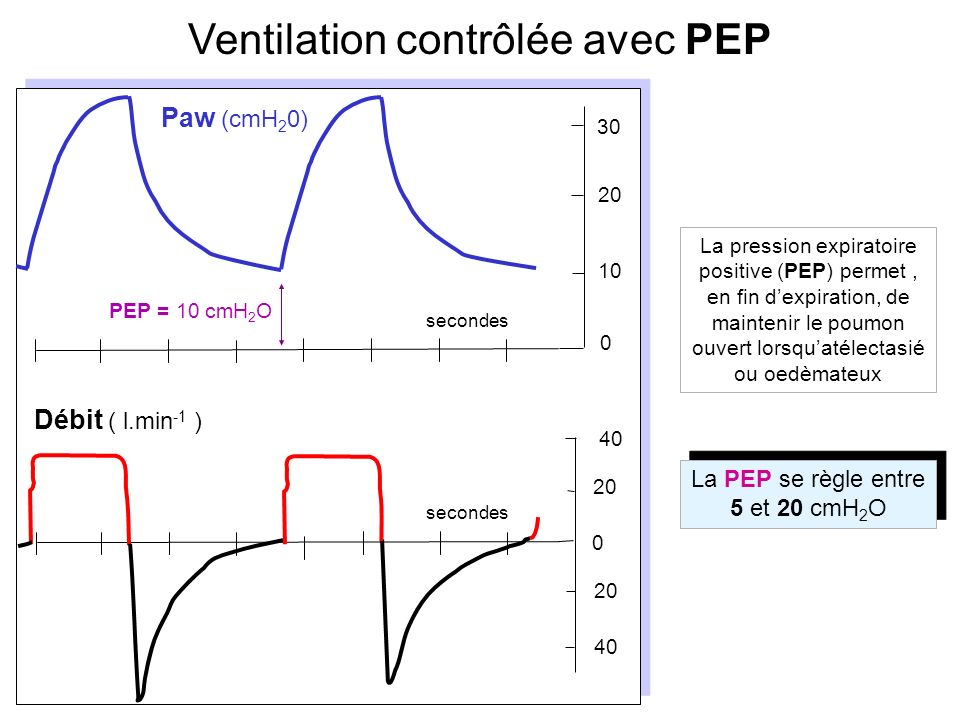
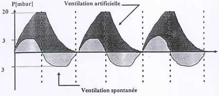
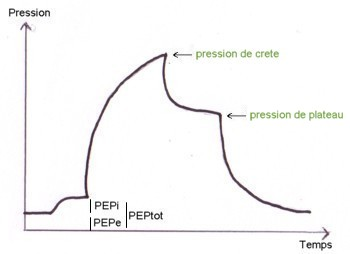

Les parametres de ventilation artificielle
Le volume courant : Vt
Le volume courant (Vt) : volume insuffle a chaque cycle, regle en fonction du poids.
7-9 ml/kg chez l’adulte.
10 ml/kg chez l'enfant.
- Vt < 6 ml/kg : favorise les atelectasies.
- Vt > 10 ml/kg : favorise la survenue de lesions de la paroi alveolaire
La frequence respiratoire : Fr
La frequence respiratoire (Fr) : nombre de cycle par minutes.
Selon l'ege :
Adulte : entre 10 et 16/min, en fonction de la PetCO2 desiree.
Enfant > 2 ans : 20/min.
Enfant 6 mois – 2 ans : 20 a 25/min.
Nourrisson : 25 a 30/min.
En fonction de la PetCO2 desiree (35 a 45 mmHg).
Le volume minute : Vmin ou Ve
Le volume minute (Vmin) : Vt x Fr : volume insuffle par minute.
La fraction inspiree en oxygene : FiO2
La fraction inspiree en O2 (FiO2) correspond a la concentration en oxygene du melange inspire par le patient. Adaptee en fonction de la gazometrie.
FiO2 max : 100%.
FiO2 min : 21% : ce qu'elle est physiologiquement en air ambiant.
Toute FiO2 > 60% peut creer des lesions pulmonaires induites par l'oxygene (toxicite pulmonaire et atelectasie), il faut donc regler une FiO2 < 60% des que c'est possible.
Le seuil de declenchement : le trigger
Le trigger est un mecanisme de reconnaissance de l'effort inspiratoire. Un seuil de declenchement est regle en fonction du patient afin de permettre au respirateur de declencher un cycle respiratoire.
Regle soit en mbar (trigger en pression) ou en L/min (trigger en debit).
Une sensibilite trop basse risque de provoquer des declenchements inappropries.
Une sensibilite trop haute risque de provoquer une augmentation du travail respiratoire du patient et donc un epuisement.
Le temps d'insufflation : rapport temps inspiratoire / temps expiratoire : I/E
Les temps d’insufflation (Ti) et les temps d’expiration (Te) ou rapport I/E correspond a la duree du temps inspiratoire par rapport au temps total du cycle ventilatoire. Ce rapport permet de maintenir la pression arterielle en CO2 e des valeurs normales (38 a 42 mmHg).
Temps d'insufflation (Ti) : temps d'insufflation active + temps de plateau (arret de l'insufflation mais valve expiratoire fermee donc pression maintenue dans les voies aeriennes).
Temps d'expiration (Te) : temps d'expiration pendant lequel la valve expiratoire est ouverte.
- 1/2 (soit 33%) : rapport physiologique : c'est-e-dire que pour une duree de cycle de 3 unites de temps (100% du temps), il y a 1 unite d'inspiration (33% du temps) et 2 unite d’expiration (66% du temps) : le temps expiratoire est 2 fois plus long que le temps inspiratoire.
- 1/1 (soit 50%) : c'est-e-dire que pour une duree de cycle de 2 unites de temps (100% du temps), il y a 1 unite d'inspiration (50% du temps) et 1 unite d’expiration (50% du temps) : le temps expiratoire est de meme duree que le temps inspiratoire
- Allongement du Ti dans les pathologies pulmonaires pour diminuer la Pins.
- 1/3 (soit 25%): c'est-e-dire que pour une duree de cycle de 4 unites de temps (100%), il y a 1 unite d'inspiration (25% du temps) et 3 unite d’expiration (75% du temps) : le temps expiratoire est 3 fois plus long que le temps inspiratoire
- Raccourcissement du Ti dans l’asthme et les BPCO pour mettre la vidange complete du poumon.
Le debit d'insufflation
Le debit d’insufflation : vitesse d'insufflation du volume courant, c'est donc la vitesse a laquelle se remplissent les poumons du patient.
Un debit important (>60 L/min) permet d’allonger le temps expiratoire.
Un debit faible (< 40 L/min) permet d’allonger le temps inspiratoire.
La pression d'insufflation : Pins
La pression d’insufflation (Pins): objectif d’obtenir une pression moyenne inferieur a 30 cmH20.
Pins max : 10 cmH20 au-dessus de celle mesuree pour depister une sonde bouchee ou coudee, un bronchospasme, un pneumothorax, ou une intubation selective.
Pins min : 10 cmH20 au-dessous de celle mesuree pour depister un debranchement et/ou des fuites.
La pression expiratoire positive : PEP
La pression expiratoire positive (PEP) est une pression residuelle maintenue dans les voies aeriennes pendant l'expiration afin de lutter contre le collapsus alveolaire de fin d’expiration et augmenter le temps d’echange gazeux entre l’alveole et le capillaire en maintenant l’alveole ouverte plus longtemps, evitant donc la formation d'atelectasies.
De 0 a 15 cmH20.
Il y a differents types de PEP :
PEP totale (PEPtot) = PEPi + PEPe
PEP intrinseque ou interne ou auto-PEP (PEPi) : PEP du patient : pression dans l'alveole en fin d'expiration superieure a la pression atmospherique.
PEP extrinseque ou externe (PEPe) : PEP que l'on regle sur le respirateur.


Courbe de pression d'insufflation en ventilation assistee contrelee
Les pressions

Courbe de pression d'insufflation en ventilation assistee contrelee
La pression de crete
La pression de crete est la pression maximale a l'interieure des voies aeriennes atteinte pendant l'insufflation.
La pression de plateau
La pression de plateau correspond a la pression qui regne au sein des alveoles en fin d'inspiration. Elle doit etre inferieure a 30 cmH20 pour eviter le barotraumatisme.
Le plateau peut etre mesure de maniere intermittente ou en continu apres une pause tele-inspiratoire (plateau tele-inspiratoire).
L'aide inspiratoire : AI
L'aide inspiratoire (AI) ou pression assistee (PA) est une assistance en pression a la ventilation spontanee du patient. Lorsque le respirateur reconnaet que le patient est en train de debuter un effort inspiratoire, un cycle respiratoire est enclenche par la machine.
La reconnaissance d'un effort inspiratoire du patient par un trigger declenche l'insufflation d'une pression pre-reglee qui s'arrete a la fin de l'effort.
Puisque le patient contrele completement sa ventilation, on ne peut pas contreler la frequence, la duree du temps inspiratoire, ni les volumes courants. Il faut donc les surveiller.
Le trigger
Le trigger est un mecanisme de reconnaissance de l'effort inspiratoire. Un seuil de declenchement est regle en fonction du patient afin de permettre au respirateur de declencher un cycle respiratoire :
Regle soit en mbar (trigger en pression) ou en L/min (trigger en debit : entre 3 et 6 l/min).
Une sensibilite trop basse risque de provoquer des declenchements inappropries.
Une sensibilite trop haute risque de provoquer une augmentation du travail respiratoire du patient et donc un epuisement.
La pression d'aide inspiratoire
La pression d'aide doit etre regle sur le volume courant et la frequence respiratoire.
Une augmentation de la pression (pression d'aide haute) s'accompagne d'une diminution de la frequence respiratoire et du travail respiratoire, de la meme maniere, une diminution de la pression (pression d'aide basse) s'accompagne d'une augmentation de la frequence respiratoire.
Reglage de la pression d'aide pour obtenir :
Volume courant : 6 – 8 ml/kg
Frequence respiratoire : 15 – 25 /min
La pente de l'aide inspiratoire
La pente de l'aide inspiratoire est la vitesse de montee en pression. Elle permet un meilleur confort du patient dans sa respiration et une synchronisation patient-machine.
Reglage de 0 a 1
0 : montee de la pression d'un seul coup.
entre 0 et 1 : montee de la pression progressivement (plus on approche du 0, plus la montee en pression est rapide, inversement, plus on approche du 1, plus la montee en pression est lente).
1 : montee de la pression lente.
Reglage en mode volume contrele
Vt : 6-8 ml/kg. 10ml/kg si ventilation au masque facial.
Fr : reglee en fonction de la PetCO2 desiree (35 a 45 mmHg).
I/E : 1/2 (peut etre modifie).
FiO2.
Pep.
Alarmes :
Pins (min et max).
Frequence (min et max).
Spirometrie basse et haute (depister une hypo/hyperventilation, fuite, extubation).
Reglage en mode pression contrelee
Pression d'insufflation maximale (Pmax) : 15 cmH2O, reglee pour obtenir un Vt entre 6 et 8 ml/kg et 10ml/kg si ventilation au masque facial.
Fr : reglee en fonction de la PetCO2 desiree (35 a 45 mmHg).
Une augmentation de la Fr entraene une diminution du Vt et une diminution de la Fr augmente le Vt.
I/E : 1/2 (peut etre modifie).
Une augmentation du I/E augmente le Vt et une diminution du I/E diminue le Vt.
FiO2.
Alarmes :
Volume (min et max).
Pins (min et max).
Frequence (min et max).
Spirometrie basse et haute (depister une hypo/hyperventilation, fuite, extubation).
Si la pression augmente dans les voies aeriennes, le volume courant diminue, la ventilation minute n'est alors plus assuree et devient inefficace.